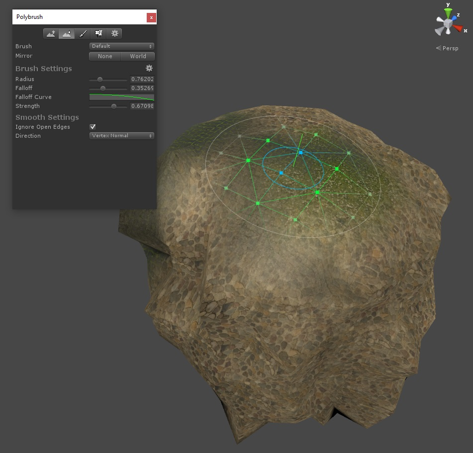
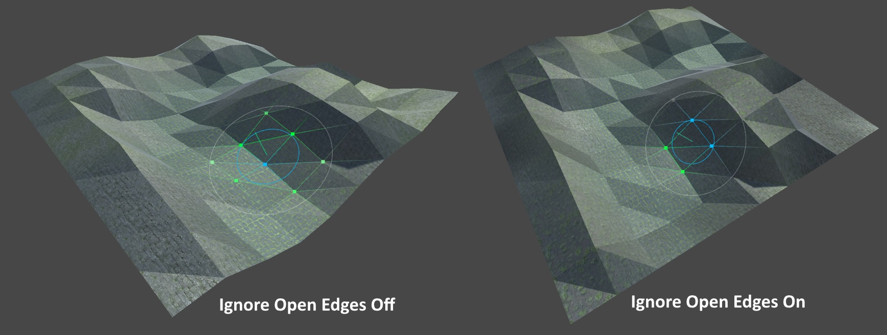

About
The Smooth tool averages the differences between vertex positions along a axis (set by Direction). Use this mode to make your jagged vertices more uniform.
Usage
Select any mesh object, enter Push/Pull mode, then click and drag while hovering over the selected mesh.
The actual movement of vertices will be affected by the current Brush Settings. Check out the Brush Settings page for more information on how.
Settings
Ignore Open Edges
When Ignore Open Edges is enabled, any vertices that make up an open edge (eg, an edge that is only a part of one face) will not be affected by the brush.

Brush Normal is Sticky
When the brush direction is set to Brush Normal this locks the vertex movement direction to the axis the brush normal is facing at the time of first application.
Direction
Direction determines how vertices move. Up, Down, and Forward move vertices along the X, Y, and Z axes respectively. Brush Normal moves vertices along axis of the brush orientation's up direction. Vertex Normal moves vertices along their normals. Use Vertex Normal on objects like spheres where you want the movement to be relative to the direction of the affected vertices.
In Smooth mode the Vertex Normal brush direction behaves slightly differently than you might expect - instead of constraining the movement path to the normal each vertex position will be averaged with it's neighbors. This is very handy for reducing large gaps in vertex positions and making your mesh look super-smooth.